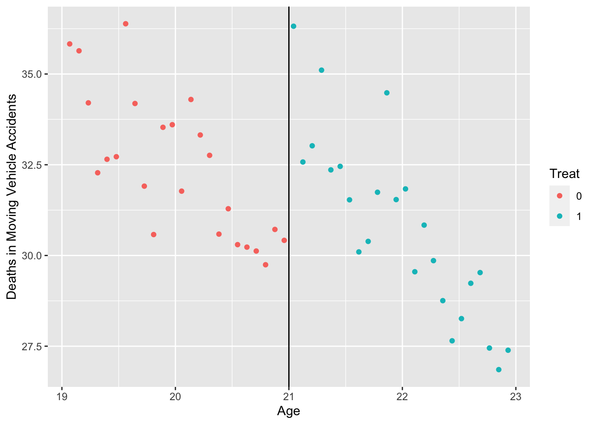
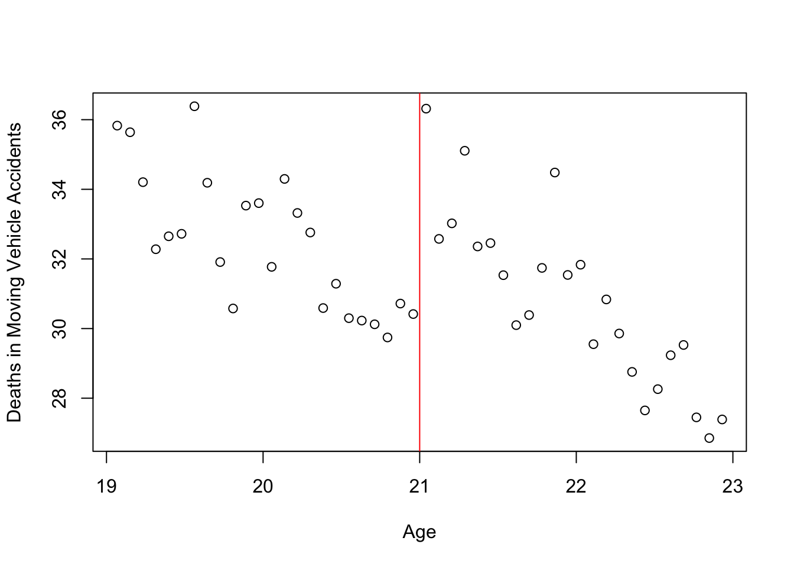
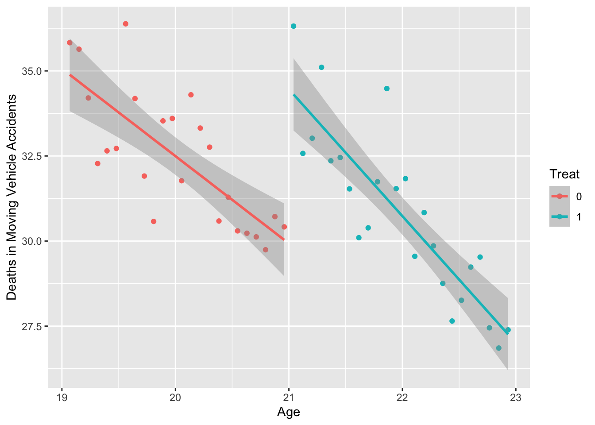
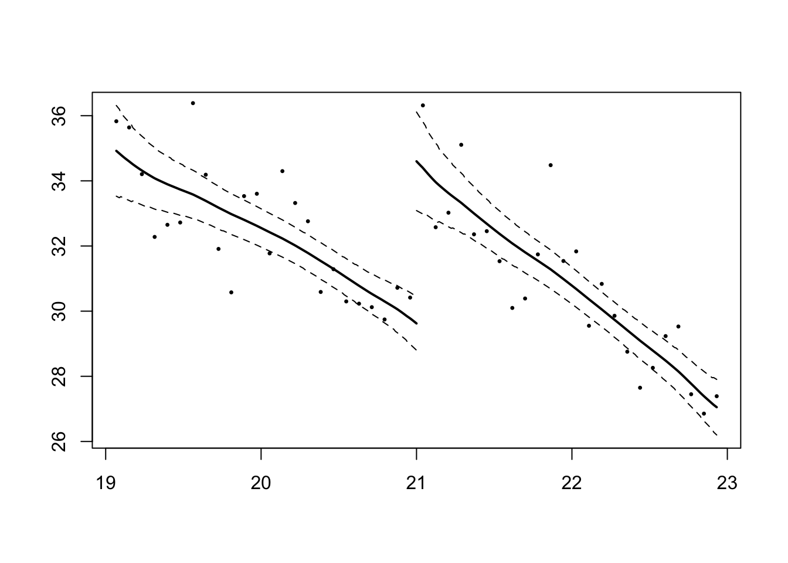

Chapter 10 Regression Discontinuity Designs (RDD)
- This lab goes over several estimators for RDD designs.
- Part of the R codes were adapted from Chapter 13 of: R Companion to Real Econometrics: https://bookdown.org/carillitony/bailey/chp11.html#fn20
Install and load the following packages:
library(ggplot2)
library(tidyverse)
library(rdd)10.1 Data
Let’s estimate an RDD model using the data from a 2009 paper by Carpenter and Dobkin about the effect of increasing the drinking age on mortality rates.
Carpenter, Christopher and Carlos Dobkin. “The Effects of Alcohol Consumption on Mortality: Regression Discontinuity from the Minimum Drinking Age,” American Economic Journal: Applied Econometrics, 2009, 1:1, 164-182.
The data are available at https://github.com/jrnold/masteringmetrics/tree/master/masteringmetrics/data in mlda.rda
First, Let’s look at motor vehicle deaths (outcome) as a function of age (assignment variable). The cutoff age is 21 years old.
load("mlda.rda")
mlda = na.omit(mlda) # removed 2 rows with missing data
head(mlda)## # A tibble: 6 × 19
## agecell all allfitted internal interna…¹ exter…² exter…³ alcohol alcoh…⁴ homic…⁵ homic…⁶ suicide
## <dbl> <dbl> <dbl> <dbl> <dbl> <dbl> <dbl> <dbl> <dbl> <dbl> <dbl> <dbl>
## 1 19.1 92.8 91.7 16.6 16.7 76.2 75.0 0.639 0.794 16.3 16.3 11.2
## 2 19.2 95.1 91.9 18.3 16.9 76.8 75.0 0.677 0.838 16.9 16.3 12.2
## 3 19.2 92.1 92.0 18.9 17.1 73.2 75.0 0.866 0.878 15.2 16.3 11.7
## 4 19.3 88.4 92.2 16.1 17.3 72.3 74.9 0.867 0.915 16.7 16.3 11.3
## 5 19.4 88.7 92.3 17.4 17.4 71.3 74.9 1.02 0.949 14.9 16.3 11.0
## 6 19.5 90.2 92.5 17.9 17.6 72.3 74.9 1.17 0.981 15.6 16.3 12.2
## # … with 7 more variables: suicidefitted <dbl>, mva <dbl>, mvafitted <dbl>, drugs <dbl>,
## # drugsfitted <dbl>, externalother <dbl>, externalotherfitted <dbl>, and abbreviated variable
## # names ¹internalfitted, ²external, ³externalfitted, ⁴alcoholfitted, ⁵homicide, ⁶homicidefitteddim(mlda)## [1] 48 19- assignment: minimum legal drinking age (agecell)
- cutoff: 21 years old
- outcome: Motor Vehicle Accidents Death (mva) per 100,000 individuals
Plot the outcome against assignment variable (ggplot2):
mlda %>%
select(agecell, mva) %>%
mutate(Treat = as.factor(ifelse(agecell >= 21, 1, 0))) %>%
ggplot(aes(x = agecell, y = mva, color = Treat)) +
geom_point() +
geom_vline(xintercept = 21) +
labs(y = "Deaths in Moving Vehicle Accidents", x = "Age")
Alternatively, there is a generic way of plotting using plot():
plot(mlda$agecell, mlda$mva, xlab = "Age", ylab = "Deaths in Moving Vehicle Accidents")
abline(v=21, col = 'red')
10.2 Segmented regression
- There appears to be a discontinuity at age 21. Let’s estimate the RD model:
- mva = b0 + b1*(agecell-21) + b2*Treat + b3*interaction1 + e
- where Treat=1 if agecell>=21 and Treat=0 if agecell<21
- let’s call age_centered = agecell-21
- interaction1 = *age_centered*Treat
mlda$Treat = ifelse(mlda$agecell>=21, 1, 0) # dummy variable for policy
mlda$age_centered = mlda$agecell - 21 # "centered" age
mlda$int1 = mlda$Treat*mlda$age_centered # interaction with "centered" ageSegmented regression:
lm1 = lm(mva ~ age_centered + Treat + int1, data = mlda)
summary(lm1)##
## Call:
## lm(formula = mva ~ age_centered + Treat + int1, data = mlda)
##
## Residuals:
## Min 1Q Median 3Q Max
## -2.4124 -0.7774 -0.2913 0.8495 3.2378
##
## Coefficients:
## Estimate Std. Error t value Pr(>|t|)
## (Intercept) 29.9292 0.5308 56.390 < 2e-16 ***
## age_centered -2.5676 0.4661 -5.508 0.000001772 ***
## Treat 4.5340 0.7506 6.041 0.000000294 ***
## int1 -1.1624 0.6592 -1.763 0.0848 .
## ---
## Signif. codes: 0 '***' 0.001 '**' 0.01 '*' 0.05 '.' 0.1 ' ' 1
##
## Residual standard error: 1.299 on 44 degrees of freedom
## Multiple R-squared: 0.7222, Adjusted R-squared: 0.7032
## F-statistic: 38.13 on 3 and 44 DF, p-value: 2.671e-12# interpretation?Now, note that age must be centered at the cutoff for ease of interpretation:
mlda$int2 = mlda$Treat*mlda$agecell # interaction with age
lm.wrong = lm(mva ~ agecell + Treat + int2, data = mlda)
summary(lm.wrong)##
## Call:
## lm(formula = mva ~ agecell + Treat + int2, data = mlda)
##
## Residuals:
## Min 1Q Median 3Q Max
## -2.4124 -0.7774 -0.2913 0.8495 3.2378
##
## Coefficients:
## Estimate Std. Error t value Pr(>|t|)
## (Intercept) 83.8492 9.3328 8.984 1.63e-11 ***
## agecell -2.5676 0.4661 -5.508 1.77e-06 ***
## Treat 28.9450 13.8638 2.088 0.0426 *
## int2 -1.1624 0.6592 -1.763 0.0848 .
## ---
## Signif. codes: 0 '***' 0.001 '**' 0.01 '*' 0.05 '.' 0.1 ' ' 1
##
## Residual standard error: 1.299 on 44 degrees of freedom
## Multiple R-squared: 0.7222, Adjusted R-squared: 0.7032
## F-statistic: 38.13 on 3 and 44 DF, p-value: 2.671e-12# interpretation?stargazer::stargazer(lm1, lm.wrong, type = 'text')##
## ==========================================================
## Dependent variable:
## ----------------------------
## mva
## (1) (2)
## ----------------------------------------------------------
## age_centered -2.568***
## (0.466)
##
## agecell -2.568***
## (0.466)
##
## Treat 4.534*** 28.945**
## (0.751) (13.864)
##
## int1 -1.162*
## (0.659)
##
## int2 -1.162*
## (0.659)
##
## Constant 29.929*** 83.849***
## (0.531) (9.333)
##
## ----------------------------------------------------------
## Observations 48 48
## R2 0.722 0.722
## Adjusted R2 0.703 0.703
## Residual Std. Error (df = 44) 1.299 1.299
## F Statistic (df = 3; 44) 38.125*** 38.125***
## ==========================================================
## Note: *p<0.1; **p<0.05; ***p<0.01PLOTTING: it is easier and fancier to do the plotting using ggplot2, but it’s also feasible to plot using generic plot()
# RDD - unequal slope
mlda %>%
select(agecell, mva) %>%
mutate(Treat = as.factor(ifelse(agecell >= 21, 1, 0))) %>%
ggplot(aes(x = agecell, y = mva, color = Treat)) +
geom_point() +
geom_smooth(method = "lm") +
labs(y = "Deaths in Moving Vehicle Accidents", x = "Age")## `geom_smooth()` using formula = 'y ~ x'
10.3 IK estimator
Imbens-Kalyanaraman optimal bandwidth calculation:
library(rdd)
rd1 = RDestimate(formula = mva ~ agecell, data = mlda, cutpoint = 21)
summary(rd1)##
## Call:
## RDestimate(formula = mva ~ agecell, data = mlda, cutpoint = 21)
##
## Type:
## sharp
##
## Estimates:
## Bandwidth Observations Estimate Std. Error z value Pr(>|z|)
## LATE 1.2109 30 4.977 1.0590 4.700 2.607e-06 ***
## Half-BW 0.6054 14 4.956 1.3767 3.600 3.182e-04 ***
## Double-BW 2.4218 48 4.566 0.7086 6.444 1.162e-10 ***
## ---
## Signif. codes: 0 '***' 0.001 '**' 0.01 '*' 0.05 '.' 0.1 ' ' 1
##
## F-statistics:
## F Num. DoF Denom. DoF p
## LATE 13.32 3 26 3.692e-05
## Half-BW 12.76 3 10 1.879e-03
## Double-BW 26.99 3 44 9.322e-10- In an RDD framework, we always need to balance our choice of large and small bandwidth. Larger bandwidth make the comparison between the treatment group and control group “less similar”.
- We see that the coefficient called “LATE”, is our parameter of interest of the MLDA program on mortality.
- We observe that deaths increase by 4.977 at the cutoff point of 21. The estimate of the treatment is slightly larger than the RDD estimate in lm1 (4.5340).
smoothed curve:
plot(rd1)